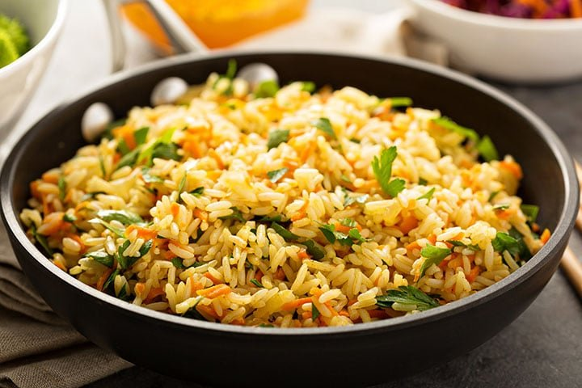

Vegetarian rice

Ingredients
- 1/2 chopped onion
- 1 chopped garlic clove
- 1 chopped courgette
- 1 grated carrot
- 1 chopped red or yellow pepper
- 75g frozen peas
- 1/2 tin of chopped tomatoes
- 250ml Vegetable stock
- 150g Dried brown rice
- 1 tbsp of dried parsley
- 1 tsp tumeric
- Seasoning
Method
Serves 2: Prep time 10 mins: cook time 25 mins
- Add onion, garlic and tumeric to pan with a splash of veg stock
- Stirring, cook gently for a 3 mins then add the dried rice
- Stir well for a further 3 mins then add the dried rice
- Stir rice in well with the vegetables
- Once rice os distributed well throughout the mixture add the stock- leave to boil
- Once boiled immediately turn heat down to simmer and cover. Cook for 10 mins
- Add in chopped tomatoes and frozen peas and stir
- Cover and simmer for further 10 mins
- Once cooked stir in dried parsley with seasoning
- Spoon rice into 2 dishes